Мамай. Озёра Южного цирка
- 5 июля 2008 -
Из серии "Мемуары. Лето-2008"
Горный велосипед не на каждую мамайскую горку заедет.
Мокрая дорога, заднее колесо буксует на первой передаче. Первый брод
- бревно. Второй брод - по завалу и камням, чуть в речку не упал. Вот
и знакомый отворот с дороги к зимухе. Возле речки кто-то построил балаган
- что-то типа квадратного чума с нарами, пока только каркас. В зимухе
Наша Маша поселились иркутские гастробайтеры - Сигл, Саня, Вова, Бек
- и чем вы думаете они занимаются? правильно, отсыпаются после вчерашнего
ночного вело-захода-заезда! Хотя, не только это :) Они же еще строят
зимовье по соседству!!! Йооо!!! Мамайский городок расширяется :) И это
еще не все, чуть подальше оказывается есть еще одна стройка - там стараются
гастробайтеры из "ближнего зарубежья", из Утулика и Байкальска
:) Даже один представитель сегодня был - Андрюха Самурай (он же Зефирный
Человек)
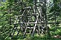
. 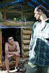
. 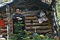
Балаган и некоторые "гастробайтеры" :)
У серьезных иркутских парней на стройке оказались еще
и две симпатичные дамы - Ира и Юля. А чего на стройке таким дамам делать,
не лучше ли прогуляться до водопада? Я даже туда дорогу знаю... почти
знаю :) Это надо сначала до озера Ганг дойти, а потом траверсом-траверсом
в сторону речки, там где-то шумит, так вот там значит и водопад будет
:)
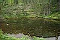
Озеро Ганг
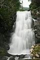
Водопад
* 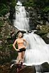
крАсны дЕвицы
Ну вот так и дошли, и прогулялись. Я даже в озере искупался,
святое дело! И водопад нашли. А то как-то все мимо, да мимо, издали
его только и видел раньше. А он и вблизи отлично в два каскада смотрится.
Особенно когда такие фотомодели в резиновых сапогах рядом позируют :)
Потом фотомодели обратно пошли, а я дальше в Южный цирк
полез. Гроза началась. А ведь с утра норальная погода была, даже жарко
было, и вот пожалуйста - дождь конкретный. Одеваю непромокаемый костюм
и сразу ощущаю себя Человеком Дождя - иду себе спокойно по тропинке,
вокруг потоки воды льются с неба и кустов, а мне тепло, сухо и комфортно
:) Тропинка набитая, пейзажи все в облаках, и причем пейзажи-то с зимы
знакомые - вот здесь через речку переезжали, вот здесь на плоскотине
застревали, вот с этой горки весело было :) Давно хотел по этим катальным
местам летом пройтись... Ага, тропинка внезапно кончилась. Дальше в
"свободное плавание". Дождь тоже кончился и даже солнце иногда
проглядывало через рваные облака.
Люблю бродить по Хамар-Дабану. Здесь каждое место интересно.
Каждый маленький цирк - как затерянный мирок в окружении гор. Горы-стены,
небо-крыша. А в этом маленьком мирке - калейдоскоп всего: деревья, трава,
цветы, ручьи, озёра, запруды, скалы, каменные россыпи, ямы, холмы. В
детстве в таких местах обязательно бы замутили масштабную игру "в
индейцев", носились бы тут друг за другом. Но разве ж в детстве
мы бы сюда дошли? А сейчас вот дошел. Нашел красивое большое озеро,
развел на пригорке костер, всипятил чай и сел на берегу отдыхать. Тишина.
Только маленький ручеек журчит где-то в камнях и какая-то мелкая птичка
далеко-далеко чирикает. От такой тишины начинает звенеть в ушах, сначала
тихо и незаметно, а потом по нарастающей... И вот уже не только звенит,
но и слова какие-то слышу, настойчивые и незнакомые... Да, место необычное,
Место Силы, здесь одному нельзя... В таком месте просто необходимо быть
с девушкой, которая тоже умеет слушать тишину... Одному здесь нельзя,
точно. Пойду-ка я дальше!
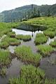
. 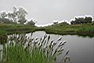
Маленькие озёра
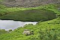
. 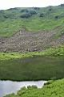
. 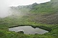
Большое озеро. Баунти.
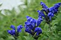
.
. 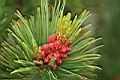
цветочки всякие разные
 .
. 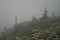
. 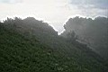
. 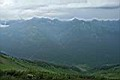
это я иду по водоразделу Мамай-Осиновка в все вокруг фотаю :)
Поднялся на гребень, водораздел между Мамаем и Осиновкой.
По одному из кулуаров спустился в Северный цирк. Зимой по этому кулуару
катались - несколько секунд фрирайдерского счастья и ты уже внизу. А
сейчас, летом, реально запарился спускаться. Это ладно по камням в кулуаре,
а дальше-то по цирку - папоротниковые поля, кусты и лавиноломы. Моя
сноубордическая натура подверглась шоку :) И ноги тоже подверглись,
чуть не переломал их там. Еще и дождь идет.
Северный цирк совсем без озер оказался, и ручьев почти нет, только в
конце два пробиваются. Не-е-е, все-таки зимой здесь лучше, катуха тут
зачетная :)
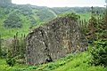
"Хижина Черного Фрирайдера"
(камушек в Северном цирке)
Спустился в сумерках к новостройкам зимушным. Самурай
в одного у костра сидит. Попил с ним чай. Потом пошел в нашу зимуху.
Там иркутяне. Поужинали, переночевали. Рано утром на электричку уехал.
С велосипедом возвращаться с Мамая даже быстрее, чем на сноуборде :)
Лёха Слюдянский
Текст - октябрь 2008
Фотографии - июль 2008